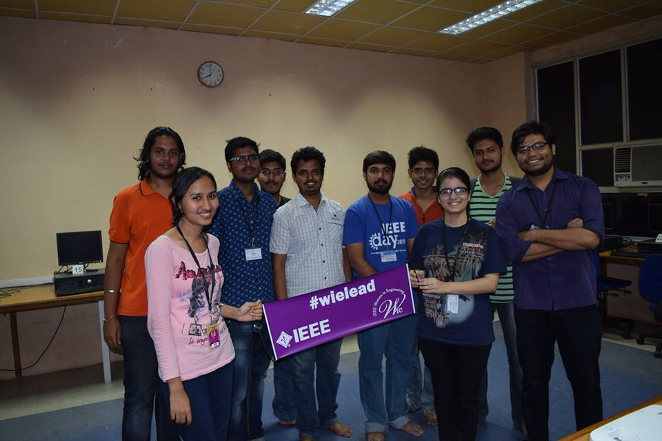

IEEE Women in Engineering (WIE) is one of the largest international professional organization dedicated to promoting women engineers and scientists and inspiring girls around the world to follow their academic interests to a career in engineering. The IEEE Women in Engineering Student Branch Affinity Group at the National Institute of Engineering was formed on 13th April 2015
Mission and Vision
The mission of IEEE WIE is to facilitate the recruitment and retention of women in technical disciplines globally. IEEE WIE envisions a vibrant community of IEEE women and men collectively using their diverse talents to innovate for the benefit of humanity.
WIE Membership Benefits
- - Access to the electronic WIE Membership Directory
- - Monthly WIE electronic newsletter which contains career information, reports on WIE and Affinity Group activities, IEEE news, and more
- - Opportunities to network, volunteer, and participate in local WIE activities

IEEE WIE Strives to
- - Recognize women’s outstanding achievements in electrical and electronics engineering through IEEE Awards nominations.
- - Organize receptions at major technical conferences to enhance networking and to promote membership in WIE.
- - Advocate women in leadership roles in IEEE governance and career advancement for women in the profession.
- - Provide assistance with the formation of new WIE Affinity Groups and support ongoing activities.
- - Promote IEEE member grade advancement for women to the membership grades of Senior member and Fellow.
- - Facilitate the development of programs and activities that promote the entry into and retention of women in engineering programs.
- - Administer the IEEE Student-Teacher and Research Engineer/Scientist (STAR) Program to mentor young women in junior and high schools.